Note: Before you begin this lesson, please read the overview and explanations of Global vs Local Variables.
A Lesson on Variable Scoping
This is a lesson on variable scoping. If you are new to using global and local variables, this lesson is for you.
Getting Started
Connect to the App Inventor web site and start a new project. Name it "Variables". Open the Blocks Editor and connect to the phone.
Components
Although we are only building an app to show the difference between local and global variables and what happens between them, we will still need a few components.
- A Label
- A Canvas
- A Ball Sprite
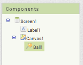
Drag both of these components from the Palette into the Viewer.
Setting component Properties
Click on the Canvas component. On the right side you should see a list of properties. Change Width to "Fill Parent" and Height to 300 pixels. This changes the size of your Canvas. This will allow us the move the Ball Sprite to a bigger range of locations on the screen.
Click on the Ball component. Set the Speed property to 10.
So far, your Design screen should look like this.
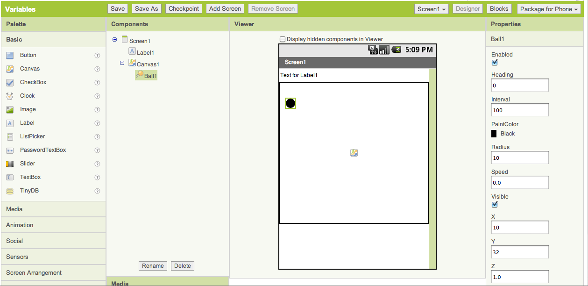
Moving the Ball Sprite: Arguments to Event Handlers are Local Variables
Go to the Blocks Editor. To move the ball sprite, we want the user to drag the ball to a position on the screen. To do this, we will use the Ball1.Dragged Event Handler and the Ball1.MoveTo.
Both of these blocks can be found under the Ball1 drawer. Drag them onto your screen and organize them like this.
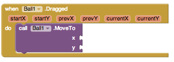
Notice how the Ball1.Dragged Event Handler has six arguments: startX, startY, prevX, prevY, currentX and currentY.
Now drag out a get block from the Variables drawer and place it on the screen, disconnected from the Ball1.MoveTo block. Try selecting currentX or currentY from the dropdown of the get block. There are no options for either of them in the dropdown. This is because arguments to an event handler are local variables. Local variables can only be accessed in the scope where they are declared. Outside of the event handler is outside the scope.
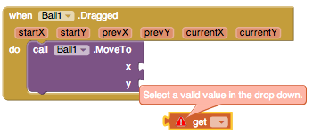
Now connect the get block to the x socket of the Ball1.MoveTo block. Click on the dropdown. Notice how you can now select startX, startY, prevX, prevY, currentX or currentY. This is because the Ball1.MoveTo block is inside the event handler thus it is inside the scope and the local variables.
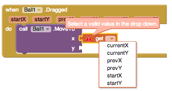
Finish connecting the x and y to the appropriate socket in the Ball1.MoveTo block. Your blocks should look like the following diagram.
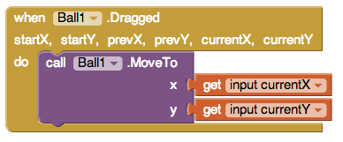
Now that you've learned a bit more about local variables and scoping, we'll add another level of scoping. Continue reading the lesson to find out how.
Next step move the mole to a different location: Adding our own local variables
Now we want to add a new feature that when we touch the mole, we will move it to a new location that is based off its current position and a random number.
To do this, we will use the Ball1.Touched Event Handler. But we also want to create our own local variables to hold a random value for x and a random value for y so we will drag out a initialize local in do block. Click on the blue mutator icon and drag one additional variable into the block. Double click the names of the variables to change them. One should be named randomX and the other randomY. Click the blue minus sign to minimize the mutator window. Configure your blocks like the figure below.
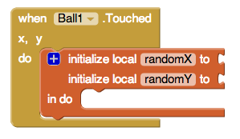
We want randomX and randomY to be random values from 0 to 100. So we will set up our blocks to look like the figure below.
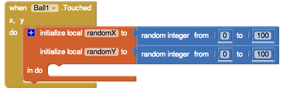
Now that we've created our new local variables, let's try getting their values and moving our Ball to a new location. Drag the Ball1.MoveTo block and place it underneath the initialize local in do block. Your blocks should look like the diagram below.
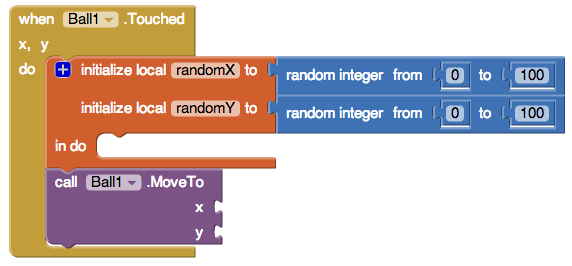
Notice how now if we grab a get block and connect it to the x socket of MoveTo, randomX and randomY are not available as options. This is because we are not in the scope of those variables. The scope for these would be inside the initialize block.
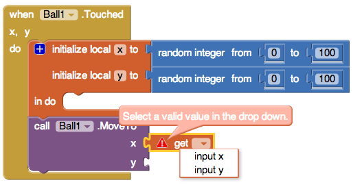
Now move the MoveTo block inside of the initialize block. Notice how randomX and randomY are now available as options. Additionally, x and y, the arguments to our event handler are still available because we all still in the same scope as our event handler (we are still inside of it).
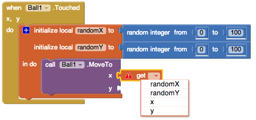
Set the variables connected to the x and y sockets in MoveTo as randomX and randomY.
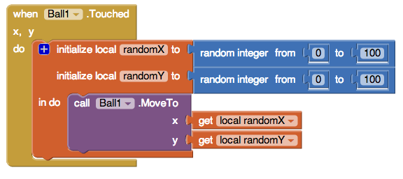
Changing the names of variables: seeing how scopes interact
Now, let's change the name of randomX and randomY to x and y. Notice how the local variables we are initializing now have the same name as the arguments to the event handler.
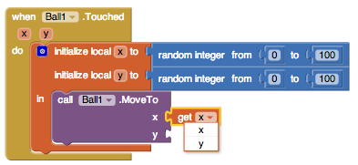
Because they have the same name, we need to follow a rule for when each variable can be selected. The rule we follow is that the variable whose scope is closest to the one we are currently in is available.
So when we are inside of the initialize local in do block, we can only access the x and y that reference the random number we selected and not the position of the Touch. Inside the Ball1.Touched but outside of initialize local in do, we can access the x and y that are the arguments to the Touch handler.
Try experimenting with local variables on your own. Local variables can be created from for loops, event handlers, and initialize local variable blocks.